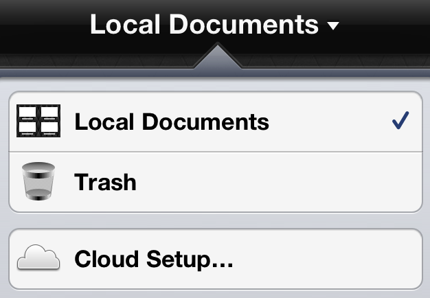

Syncing with OmniPresence
OmniPresence is a way to store your documents in the cloud and sync them with other devices. To use OmniPresence you'll need: (1) this copy of GraphSketcher and (2) access to a standard WebDAV server such as the Omni Sync Server (signup is free!). The Apache server included with Mountain Lion Server and WebDAV servers available through many web hosting providers are also great options if you'd prefer to set up your own. If you would like to sync your GraphSketcher documents with your Mac you'll also need OmniPresence for Mac.
To start using OmniPresence, tap the Local Documents title in the toolbar and choose Cloud Setup.
First pick the type of account you'd like to create. Enter the server's location (if necessary) and your login information, and choose either OmniPresence or Both as your account type. (Choosing Both will give access to standard WebDAV import/export as well as OmniPresence sync. Be careful: files stored in a remote import/export location will NOT be synced!).
When you're ready, tap Connect. GraphSketcher will check to make sure the server is compatible with OmniPresence, and then your new folder will be connected to the cloud.
After connecting you'll find yourself looking at an empty cloud folder. To sync files stored locally you can use the Move All Local Documents button, or for individual documents:
1. Tap the title in the toolbar and choose Local Documents.
2. Tap Edit in the toolbar, and tap to select the documents you'd like to move.
3. Tap Share, then Move to "(folder name)". The files will be moved from Local Documents to your cloud sync folder.
Files stored in an OmniPresence-enabled folder will sync automatically whenever changes are made to them. To stop syncing a file, just move it back to Local Documents. To disconnect a synced folder from GraphSketcher, go to Cloud Setup and tap Edit to delete the folder from your list of OmniPresence accounts. Note that this won't delete any remaining contents of the folder; the files will remain in the cloud, but won't be affected by changes on this device.
The OmniPresence button appears in the toolbar when viewing a synced folder in the document browser as well as when editing a document in a synced folder. It animates to indicate a sync is in process, and if needed you can tap it to prompt a sync as well.